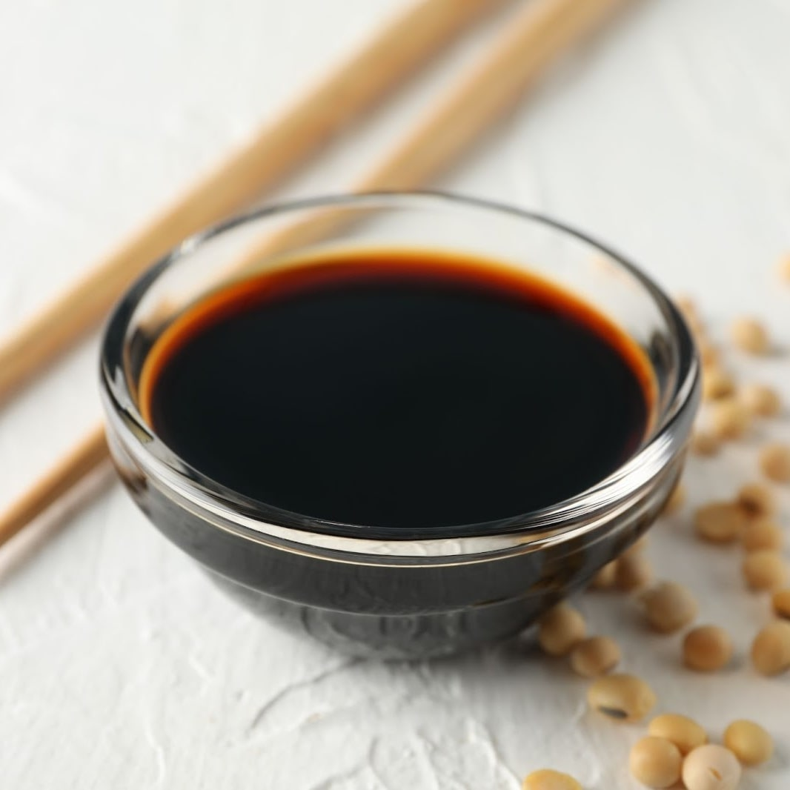

Shoyu Tare

What is shoyu tare?
Shoyu tare is a soy sauce based seasoning used to flavour ramen broth. It is also used to marinate eggs if you're using them as a topping.
Ingredients (for four)
- 75ml soy sauce
- 35ml water
- 10ml dry sake
- 10ml mirin
- 10g fine sea salt
- 5g granulated sugar
Steps
- Mix the dry sake, mirin, water and soy sauce in a saucepan and bring to a boil.
- Add salt and sugar and stir to dissolve.